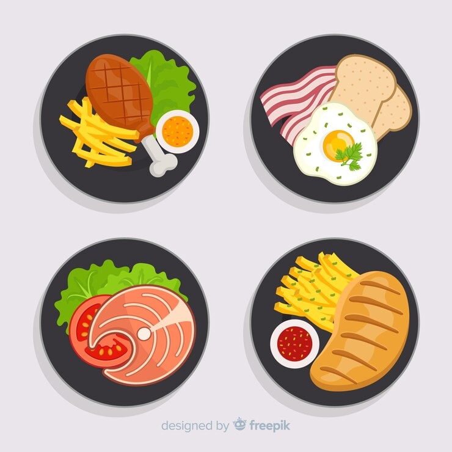

Dietas Saludables
Macronutrientes:

Carbohidratos: Proporcionan energía. Se encuentran en granos, frutas, verduras y legumbres
Proteínas: Necesarias para el crecimiento y reparación de tejidos. Se encuentran en carnes, pescado, huevos, legumbres y productos lácteos
Grasas: Importantes para la absorción de vitaminas y la producción de hormonas. Las fuentes saludables incluyen aguacates, frutos secos y aceite de oliva.
Micronutrientes:

Vitaminas: Ayudan a las funciones corporales específicas. Ejemplos incluyen la vitamina C (en frutas cítricas) y la vitamina D (en pescados grasos y exposición al sol).
Minerales: Como el hierro, calcio y zinc, son cruciales para diversas funciones corporales. Se encuentran en alimentos como carnes, lácteos y vegetales de hojas verdes.

Hidratación:
El agua es esencial para todas las funciones corporales. Ayuda a la digestión, absorción de nutrientes y regulación de la temperatura corporal. La recomendación general es consumir aproximadamente 8 vasos (2 litros) de agua al día, pero esto puede variar según el clima, nivel de actividad y necesidades individuales. Además del agua, otros líquidos como infusiones y té sin azúcar contribuyen a la ingesta diaria de líquidos. Los alimentos con alto contenido de agua, como frutas y verduras (por ejemplo, sandía, pepino), también ayudan a mantener la hidratación.La hidratación adecuada es fundamental para el bienestar general y el funcionamiento óptimo del cuerpo.

Porciones y equilibrio:
Comer porciones adecuadas para evitar el exceso de calorías. Las guías como el plato de Harvard o la pirámide alimentaria pueden ayudar a planificar las comidas. Incluir una amplia gama de alimentos para asegurar la ingesta de todos los nutrientes necesarios.
ㅤ
Concejos practicos:
*Planificación de Comidas: Preparar un plan de comidas equilibrado y variado.
*Leer Etiquetas: Prestar atención a las etiquetas de los alimentos para entender mejor su contenido nutricional.
*Cocina en Casa: Preparar tus comidas en casa te da control sobre los ingredientes y las porciones.
*Sin distracciones: Come sin distracciones como la televisión o el teléfono para estar más consciente de lo que estás comiendo y disfrutar más la comida.
*Masticar Bien: Tómate tu tiempo para masticar bien los alimentos, lo cual facilita la digestión y te ayuda a sentirte satisfecho con menos comida.
*Actualización: Mantente informado sobre las recomendaciones nutricionales actuales y las investigaciones en nutrición.
*Consulta Profesional: Si tienes necesidades dietéticas especiales o problemas de salud, considera consultar a un dietista o nutricionista.
ㅤ
Dietas
Las dietas juegan un papel crucial en nuestra salud y bienestar, ya que proporcionan los nutrientes que el cuerpo necesita para funcionar correctamente. Una dieta equilibrada y saludable es fundamental para nuestro organismo, teniendo en cuenta el contexto de nuestro municipio para las dietas usamos productos locales a los cuales tenemos acceso fácilmente.
ㅤ
1. Dieta basada en productos locales
Descripción: Aprovecha los productos frescos y de temporada disponibles en el municipio, como frutas, verduras, legumbres y tubérculos.
Ejemplo de menú:
ㅤ
Desayuno: Avena cocida con leche (puede ser leche en polvo o de vaca) y frutas locales como banano o guayaba
Almuerzo: de lentejas o fríjoles (muy ricos en proteínas) acompañada de arroz y ensalada de tomate y pepino.
Cena: Arepas de maíz con queso fresco y ensalada de lechuga y aguacate.
Snack: Papaya o banano, frutas abundantes en la región.
ㅤ
2. Dieta rica en legumbres y granos
Descripción: Las legumbres como fríjoles, lentejas y garbanzos son ricas en proteínas y muy accesibles.
Ejemplo de menú:
ㅤ
Desayuno: Pan integral con aguacate y jugo de fruta fresca sin azúcar.
Almuerzo: Guiso de garbanzos con arroz, plátano maduro frito, y ensalada de repollo y zanahoria.
Cena: Sopa de fríjoles con yuca y batata.
Snack: Mazorca asada o arepa.
ㅤ
3. Dieta económica basada en tubérculos
Descripción: Los tubérculos como la papa, yuca y batata son abundantes y accesibles en el municipio.
Ejemplo de menú:
ㅤ
Desayuno: Arepa de maíz con huevo y café o aguapanela.
Almuerzo: Papa o yuca cocida con arroz, huevo frito y ensalada de pepino y tomate.
Cena: Puré de batata con queso fresco y tortillas de maíz.
Snack: Chips de yuca horneados o mazorca hervida.
ㅤ
4. Dieta balanceada y accesible
Descripción: Combinación de productos locales ricos en nutrientes a bajo costo.
Ejemplo de menú:
ㅤ
Desayuno: Batido de guayaba o mango con leche.
Almuerzo: Arroz con fríjoles y ensalada de lechuga, tomate y aguacate.
Cena: Sopa de verduras (zanahoria, papa, apio) con un trozo de pollo o huevo.
Snack: Plátano asado con queso.
ㅤ
5. Dieta vegetariana económica
Descripción: Enfocada en el uso de alimentos vegetales locales accesibles, como legumbres, cereales y vegetales.
Ejemplo de menú:
ㅤ
Desayuno: Arepa con guacamole y jugo de naranja.
Almuerzo: Arroz con lentejas, acompañado de ensalada de ㅤㅤㅤtomate y cebolla.
Cena: Sopa de yuca con batata y ensalada de repollo.
Snack: Fruta de temporada (como papaya o mandarina).
ㅤ
6. Dieta para aumentar energía usando alimentos locales
Descripción: Focalizada en alimentos que proporcionen energía y se encuentren fácilmente en el municipio.
Ejemplo de menú:
ㅤ
Desayuno:Avena cocida con panela y banano.
Almuerzo: con plátano frito, huevo duro y ensalada de zanahoria y repollo.
Cena: Tostadas de yuca con queso fresco y aguacate.
Snack: Maní tostado o frutas frescas.
ㅤ